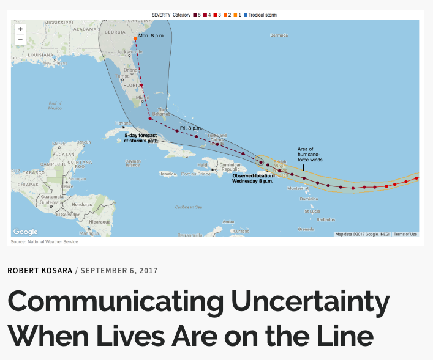
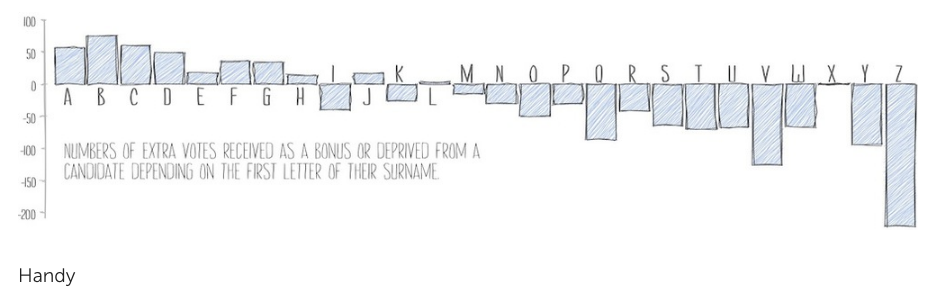

Visualizing Uncertainty
I am not sure where one should start with this topic. Visualizing uncertainty is hard. in general, it is still an unsolved problem.
Back in the days even the mighty Nathan Yau wrote:
I still struggle with uncertainty and visualization. I haven’t seen many worthwhile solutions other than the old standbys, boxplots and histograms, which show distributions. But how many people understand spread, skew, etc? It’s a small proportion, which poses an interesting challenge.
Perhaps a good place to start the article When Lives Are on the Line by Robert Kosara. The article provides plenty of (good) examples and shows the inherent problems of uncertainty visualization. The underlying topic, i.e. Hurricane Forecasting, is also very relevant.

Real World Metaphors
This approach tries to visualize uncertainty by using visceral representation that are familiar to viewers. Example are brushstrokes (e.g. the thicker the more uncertain), hand-drawn style (e.g. the more sketchy the more uncertain) or watercolors (e.g. the more transparent the more uncertain). The used techniques might be summarized or at least strongly overlap with the domain of non-photorealistic rendering, which is
… an area of computer graphics that focuses on enabling a wide variety of expressive styles for digital art. In contrast to traditional computer graphics, which has focused on photorealism, NPR is inspired by artistic styles such as painting, drawing, technical illustration, and animated cartoons. NPR has appeared in movies and video games in the form of “toon shading”, as well as in scientific visualization, architectural illustration and experimental animation. An example of a modern use of this method is that of cel-shaded animation.

HANDY. In 2012 Wood et al. presented a framework for sketchy information visualization. The framework is called handy and is a processing library. Here is an excerpt from abstract:We present and evaluate a framework for constructing sketchy style information visualizations that mimic data graphics drawn by hand. We provide an alternative renderer for the Processing graphics environment that redefines core drawing primitives including line, polygon and ellipse rendering. These primitives allow higher-level graphical features such as bar charts, line charts, treemaps and node-link diagrams to be drawn in a sketchy style with a specified degree of sketchiness. …
There also exists a great gallery, which exhibits many examples and a very thoughtful blogpost about the potential and use of sketchiness for visualizing uncertainty in general.
SEMIOTIC. Elijah Meeks is very smart- He created Semiotic.
Semiotic is (yet another) data visualization framework. It is based on react. The motivation behind it is to provide a fast way to create plots, without putting to much time into a specific chart.
It can visualize uncertainty by ‘sketchy’ rendering. Elijah wrote a very nice article which lays out his ideas.